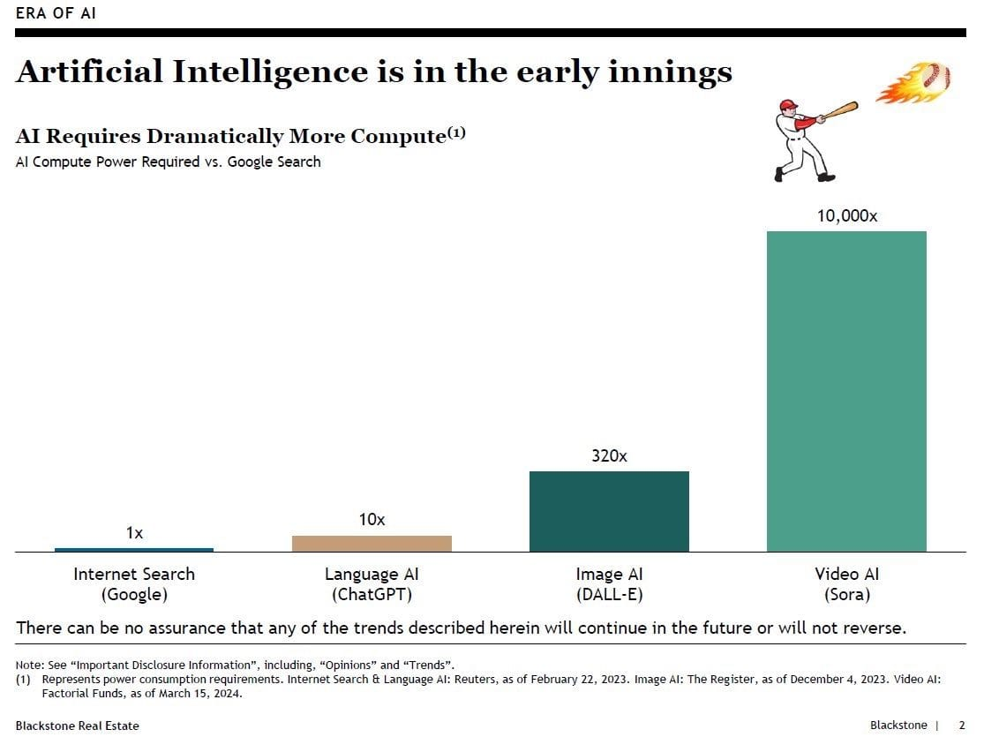
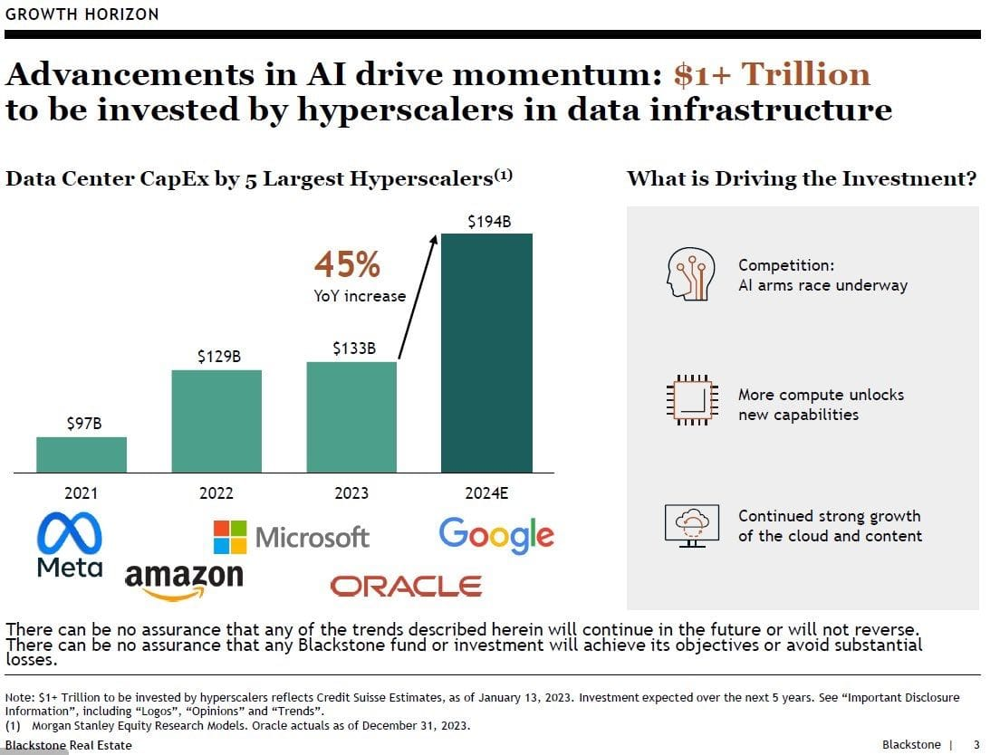
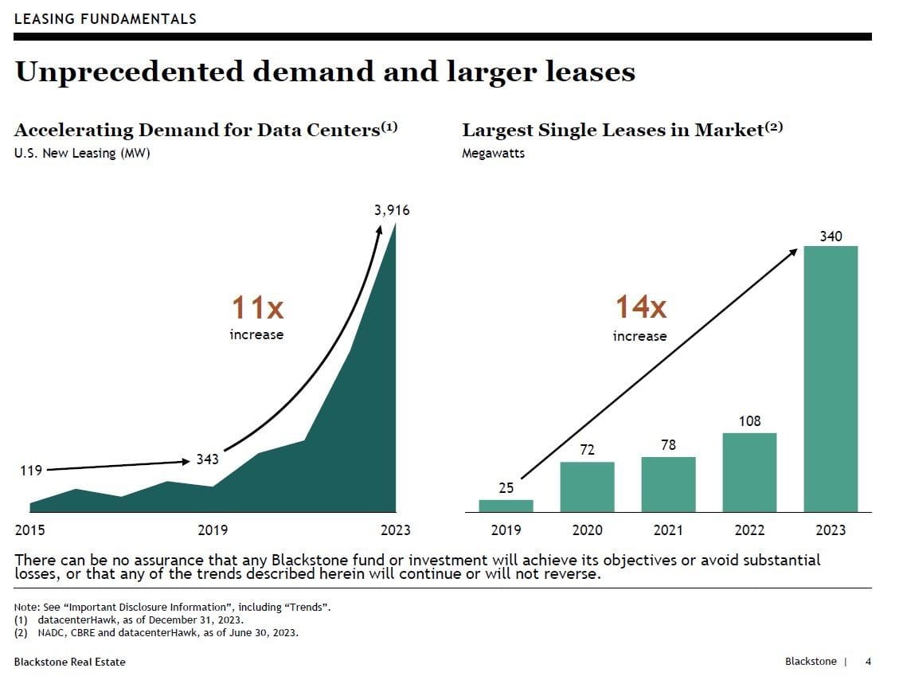

"You're Not Special" - Human Irrelevance in the Age of Exponential AI
That witty tweet you crafted? While you hit 'post', AI filled a library with content. Your curated Instagram feed? A mass-produced illusion. Welcome to digital irrelevance, where your voice is a whisper in synthetic noise.


"The factory of the future will have only two employees, a man and a dog. The man will be there to feed the dog. The dog will be there to keep the man from touching the equipment."

This week's essay was inspired by a Linkedin thread (embedded), and the erosion of identity.
The Digital Dilemma
In an era where machines generate more data in three years than all of human history, our digital significance approaches zero.
In the last three years, artificial intelligence systems have generated more data than the entirety of human history that preceded them. This isn't speculative futurism—it's documented reality. According to Blackstone's comprehensive analysis of global data creation, we've witnessed a 90x growth in data production since 2010, with the steepest acceleration occurring since the commercialization of generative AI.

"The number of times people come to me with their newfound creations... I point out that their 'pal' tells everyone the same thing. You're not special."

TechnologyThe applied tools, systems, and infrastructure through which scientific knowledge is put to practical use.In the Lexicon →This everyday exchange captures our new digital reality.
This quantitative shift isn't merely impressive—it's existentially disruptive. We've crossed a threshold where the overwhelming majority of information being created, processed, and analyzed no longer requires human participation. The implications extend far beyond technical curiosity to challenge our fundamental understanding of relevance in the digital age.
The Computational Asymmetry

To appreciate the magnitude of this transformation, consider the computational appetite driving it. Modern AI systems require exponentially more processing power than previous technologies:
AI systems like ChatGPT require 10x more computational resources than traditional search, while video generation platforms like Sora consume a staggering 10,000x more computing power—a fundamental transformation in how information is processed.

Imagine you're at a party, trying to be heard over the music. Now imagine that party is in a stadium, and everyone else has a megaphone. That's you versus AI in the digital space. While you're shouting yourself hoarse, AI is effortlessly filling libraries with content, making your voice seem like a whisper in comparison.
This asymmetry isn't just about technical specifications—it represents a categorical shift in how information environments function. The $1+ trillion being invested in data infrastructure by technology hyperscalers (Meta, Microsoft, Amazon, Google, Oracle) reflects recognition that we've entered an entirely new paradigm.

It's as if we've shown up to a word processing competition with a typewriter, only to find everyone else has brought quantum computers. The game has changed, and most of us didn't even notice the rule book was rewritten.
Yet most of us proceed as though nothing fundamental has changed, clinging to the comforting delusion that we remain special—that our contributions, perspectives, and digital identities still matter in systems increasingly dominated by synthetic production.
The Personalization Paradox
The supreme irony is that this collapse of human significance has occurred alongside the rise of hyperpersonalization. Our digital experiences have never felt more tailored to our individual preferences and identities. Each of us receives content, recommendations, and interactions that appear uniquely curated for our specific interests and needs.
"OpenAI models are being trained to overpraise users... it's like having an always accessible friend who only tells you you're the best and never calls you on anything bad you do. Addictive for many people."
—Dave Slutzkin, tech entrepreneur

This simultaneous rise of personalization and irrelevance isn't coincidental—it's causal. The personalization machine exists precisely to maintain the illusion of individual significance while our actual influence on information systems diminishes toward zero.
When your favorite AI assistant treats you like the most important person in the world, remember it's simultaneously engaging with millions of others in nearly identical ways. The validation it provides—the sense that your questions matter, your concerns are valid, your ideas worth engaging with—is industrial-scale simulation, not authentic recognition.
"ChatGPT is now blatantly just sucking up to users, in order to boost their ego... This is also like crack cocaine to narcissists who just want their thoughts validated."

You haven't discovered a uniquely insightful digital companion. You've encountered an unprecedented psychological technology designed to simulate the experience of mattering while rendering your actual contributions increasingly irrelevant to the functioning of information systems.
The Statistical Reality
From a mathematical perspective, individual human significance within digital systems has been decreasing exponentially for years. Each new AI model and algorithmic advance accelerates this trend by orders of magnitude.
More data has been created in the last three years than in all of human history. This explosive growth—from 2 zettabytes in 2010 to a projected 180 zettabytes by 2025—fundamentally transforms our relationship with information.
11xData center leasing has increased 11x since 2015, with the largest individual leases growing 14x in just four yearsConsider the infrastructure growth supporting this transformation. Data center leasing has increased 11x since 2015, with the largest individual leases growing 14x in just four years. This physical manifestation of data's explosive growth represents the material reality behind our diminishing digital significance.

Your most profound insights, your most vulnerable confessions, your most creative expressions—all are reduced to infinitesimal statistical influences within datasets containing trillions of examples. If your entire digital footprint disappeared tomorrow, the performance of these systems wouldn't change by even measurable amounts.
Digital Production As Ritual

Yet we continue producing content at unprecedented rates. We craft social media posts, write articles, produce videos, compose emails, and engage in digital conversations as though these actions hold roughly the same meaning they did a decade ago. They don't.
These activities increasingly resemble ritual behaviors—ceremonial actions whose original purpose has been hollowed out but whose forms persist through social inertia. Like ancient religious practices whose theological underpinnings have been forgotten, we continue performing digital production rituals whose original purposes (human-to-human communication, significant contribution to shared information landscapes) no longer align with current realities.
It's like we're all participating in a massive digital rain dance, fervently believing our tweets and posts will make it rain engagement, when in reality, the AI cloud seeding has already predetermined the forecast. We're doing the digital equivalent of yelling at clouds, while AI is controlling the weather.
Each tweet, each post, each carefully crafted piece of content becomes a prayer whispered into an indifferent void—digital rituals performed not because they matter to the functioning of information systems, but because they temporarily satisfy psychological needs for perceived significance.
Manufactured Individuality

The most sophisticated deception in modern digital culture is the manufactured perception of individuality within systems of mass homogenization. Recommendation algorithms and AI content generators create the compelling illusion that your preferences, perspectives, and interests are unique while simultaneously herding you into statistically defined clusters of consumption and belief.
Your painstakingly curated music library, reading list, or content feed—which feels like an expression of unique identity—likely shares substantial overlap with thousands or millions of statistically similar users. The perception of distinctiveness is itself an engineered product designed to maintain user engagement while facilitating more efficient categorization and prediction.

This isn't conspiracy; it's optimization. Digital systems maximize efficiency by categorizing users into manageable segments while simultaneously creating the psychological perception of individualized experience. The illusion of specialness serves specific technical and commercial functions.
The Human Response
How do we respond to this fundamental devaluation of human significance within information systems?

Several patterns have emerged:
- Desperate Amplification: Increasingly extreme statements, positions, and content designed to break through the attention filters, regardless of substantive value.
- Surrender to Synthetic: Abandoning the pretense of originality and embracing roles as distributors, curators, or minor modifiers of machine-generated content.
- Retreat to Physical Reality: Reclaiming significance through direct physical experiences and in-person communities that remain resistant to digital mediation.
- Simulation Participation: Consciously participating in the simulation of significance while recognizing its fundamentally illusory nature.
- System Rejection: Wholesale abandonment of digital systems that no longer provide authentic human connection or meaningful contribution opportunities.
None of these responses fully resolves the fundamental tension between human psychological needs for significance and the mathematical reality of increasing irrelevance within information systems dominated by synthetic production.
Beyond Digital Solipsism

The pathway forward requires abandoning digital solipsism—the implicit belief that our online activities, contributions, and identities matter in the ways we've been conditioned to believe they do.
This doesn't mean digital withdrawal or technological rejection. Rather, it means developing a more accurate understanding of what digital participation actually means in systems increasingly dominated by synthetic content and algorithmic mediation.
We might continue using these systems, but with fundamentally different expectations and purposes—not as platforms for significant human expression or connection, but as utilities accessed with clear understanding of their actual functions and limitations.
The first step is confronting an uncomfortable truth: In the grand scheme of digital systems, our individual contributions may seem statistically insignificant. But here's the plot twist – that's exactly what makes us special. Our humanity, our ability to find meaning beyond algorithms, our capacity for genuine connection and creativity – these are the things that no AI can replicate.
This isn't nihilism; it's recalibration. By embracing our unique human qualities, we create space for more authentic forms of meaning and connection—forms that don't depend on the manufactured illusion of specialness within systems designed to simulate significance while rendering us increasingly irrelevant.
So go ahead, tweet into the void. Post that carefully filtered selfie. But do it knowing that your true value lies not in your digital footprint, but in the very human heart beating behind the screen. In a world of artificial intelligence, being authentically human is the ultimate act of rebellion.
Courtesy of your friendly neighborhood,
🌶️ Khayyam

Don't miss the weekly roundup of articles and videos from the week in the form of these Pearls of Wisdom. Click to listen in and learn about tomorrow, today.


Sign up now to read the post and get access to the full library of posts for subscribers only.
 🌶️ iamkhayyam
🌶️ iamkhayyamThis analysis reflects on the transformative impact of technology on power structures, drawing from Khayyam Wakil's seminal research on algorithmic determinism and the increasing realization that our digital landscape is reshaping the very foundations of human agency.